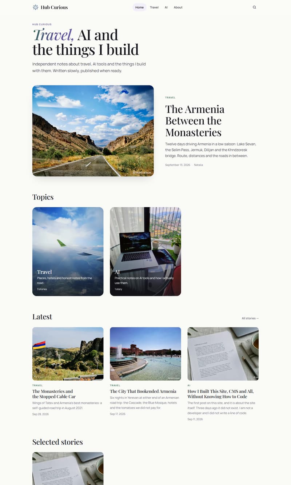

Blog · Custom CMS
Hub Curious
My personal blog with its own CMS — an admin panel where I write, edit and publish articles and upload photos, no code needed. Built in three days with Claude Code; runs on Cloudflare for the price of a domain.